COMP3218 - Game Design and Development
Game Design Vocabulary
Game Engine: software application that hides technical implementation of the
graphics rendering, sound reproduction, asset management,
collision detection and physics simulation aspects of game
development, allowing the developer to focus on the game logic
and interaction
Scripts
-
Start() - runs on the first frame
-
Update() - runs at the start of every frame
-
used for receiving input
-
used for objects and variables
-
used for timers
-
FixedUpdate() - runs once, zero, or several times per frame
depending on the framerate
Atoms of Game Design
Game design is influenced by many factors including:
- game state
- player
- avatar
- characters
- mechanics
- dynamics
- goals
- rules
- theme
- objectives
- procedures
- resources
- conflicts
- boundaries
- aesthetics
- interface
- rewards
- outcomes
- complexity
- difficulty
- story
-
controls
-
State and View
-
Game State: known value of all variables determining the
progress, positions, and flow
-
Game View: how the player perceives the game state
-
health bars
- currency
- menus
-
inventory
-
game board / map
-
Players, Avatars, and Characters
-
Player: human being interacting with the game
-
Avatar: manifestation of the player
-
Character: personality written and created in the game
-
Mechanics, Dynamics, Systems, and Goals
-
Mechanics: rules, equations, and algorithms behind a game
-
e.g. points, achievements, status, levels, quests
-
Dynamics: patterns of play emerging from mechanics
-
e.g. appointment, feedback, progress, ability,
strategy
-
Systems: collections of mechanics and dynamics
-
Goals: motivation to use dynamics
-
Genre: classification of the systems
-
e.g. FPS, RPG, Racing
-
Theme: classification of aesthetics, narrative, and
content
-
e.g. fantasy, simulation
Fullerton's Formal Elements
Fullerton's Formal Elements: model of eight mandatory elements which form the
structure of games.
Players must interact with each other and usually win or lose.
Many combinations of players and computers are possible.
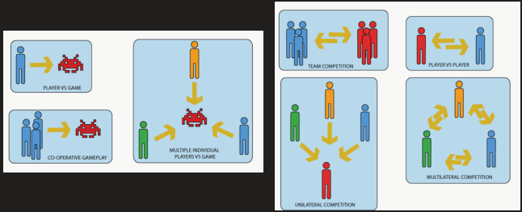
Objectives are the motivation behind the dynamics.
-
Capture: Players have to avoid getting captured or killed while
destroying some opponent properties
-
Chase: Players have to elude or catch an opponent
-
Race: Players have to reach a goal before anyone else
does
-
Alignment: Players have to align their pieces in a spatial or
conceptual configuration
-
Rescue or Escape: Players have to get some defined units or items to
safety without being compromised
-
Forbidden Act: Players have to get the opponents to break the rules
or to abandon a strategy
-
Construction: Players have to construct, maintain, or manage game
objects
-
Exploration: Players have to explore unknown game areas
-
Solution: Players have to solve a problem or puzzle
-
Outwit: Players have to gain and use knowledge to outwit
their opponents
Procedures are the actions or methods of play allowed by the
game's rules. These can be instructions or controls
specified to the player.
-
Starting - how the game begins and sets up its
environment
-
Progression - ongoing procedures running during gameplay
-
Special - actions only available based on the game
state
-
Resolving - actions which end the game and cause win or
loss
Rules define the game constraints, and describe what the player
can and cannot do.
-
Defining objects and conditions
-
Restricting actions
-
Determining effects
Resources are game objects which have value for players and
help them to reach their objectives. Designers control the scarcity and utility of objects.
-
units, currency, actions, inventory
Conflict emerges through procedures and rules preventing the
player from reaching their goal.
-
inhibitions to progress
-
locked doors, walls
-
choices e.g. paths
-
optimal solutions
Boundaries are the restrictions in the game environment.
Players will be restricted to certain actions or movements
within map, field, board, or world.
The outcome of a game is often measurable e.g. score and uneven
e.g. one team/player wins. The goal is described by a set of
conditions.
- rewards
-
winning or losing
-
user experience
- score/points
- achievements
The MDA Framework
MDA (Mechanics-Dynamics-Aesthetics) Framework: framework defining and providing a formal representation
of the three basic elements of game design
-
Mechanics: rules, actions, interactions, algorithms, and data
structures
-
a game is modified by adding, removing, or changing
mechanics
-
mechanics affect the dynamics and aesthetics
-
Dynamics: runtime behaviour of mechanics based on player
input
-
player inputs to control the mechanics
-
e.g. A to jump
-
how the mechanics are experienced
-
e.g. jumps at speed x, falls at rate y, moves in an arc
-
Aesthetics: emotional responses evoked in the player
-
Sensation: player enjoys memorable audio-visual effects
-
Fantasy: imaginary world
-
Narrative: a story that drives the player to keep playing
-
Challenge: urge to master a skill
-
Fellowship: active community for players to join
-
Discovery: urge to explore
-
Expression: creativity and customisation
-
Submission: connection to a game
Designing Mechanics
Mechanics are the rules, equations, and algorithms behind a game. Rules
are used to control the game and simulate/approximate complex systems through the game engine.
Rules share 6 common features:
-
rules limit player action
-
rules and explicit and unambiguous
-
rules are shared by all players
-
rules are fixed
-
rules are binding
-
rules are repeatable
Salen and Zimmerman's model separates game rules into 3 categories:
-
Operational: formal attributes and statistics defining the game,
frequently provided as written rules supplied in instruction
booklets
e.g. players take turns to move pieces on the board
e.g.
if players land on a property they may buy it
e.g. roll to
hit first, then roll for damage
-
Constitutive: underlying formal structures existing below the surface of
rules presented to players
e.g. the game is played on an 8x8 grid
e.g. shortswords do
1d6 damage
-
Implicit: unwritten rules concerning etiquette, sportsmanship, and
implied behaviour
e.g. when touching a piece the player must move
e.g.
beginner players may take back a move after playing
e.g.
players must space themselves out around the board
Implicit rules emerge from operational rules which are informed
by constitutive rules
Core Dynamics
Dynamics: runtime behaviour of mechanics based on player input
The Core Dynamic is the central dynamic in the game, and helps to build a coherent experience by anchoring the player to a major form of play. Without
a core dynamic, the game's rules may appear confusing or
poorly defined.
-
compete for a finite spatial resource
-
e.g. Civilisation
-
correctly guess an outcome
-
can be statistical or empathetic
-
e.g. Hearthstone, Rock-Paper-Scissors
-
solve a spatial pattern involving patterns or puzzles
-
e.g. Tetris, Tic-Tac-Toe
-
struggle against fatal elements to stay alive
-
e.g. Minecraft survival
-
battle against opponents
-
e.g. Doom, Overwatch, CSGO
-
use building blocks to create something aesthetic
-
e.g. Minecraft, SimCity, Catan
-
collect a resource or object
-
e.g. Monopoly
-
contest of navigation and pace with opponents
- e.g. Pac-Man
-
exchange resources for co-operation or to manipulate a
deal
-
e.g. Patrician
-
be the first to achieve a win state
-
e.g. Mario Kart
Core dynamics are often related to fundamental human needs such
as survival, collecting resources to survive, pattern
recognition, and competition.
Interaction Design
-
What does the player know about the game state?
-
How can the player control the game state?
-
What feedback does the player receive from the
controls?
Information Design
Information design concerns the amount of information given to the player
and the way it is provided.
-
For meaningful play, players need information which is used to make decisions
-
Players should only have information on the game state which is relevant to the dynamics
-
more information leads to better decision-making and
strategy
-
less information leads to statistical and risky
gameplay
-
Information can be provided in different ways
-
HUD, attributes, cycles/turns
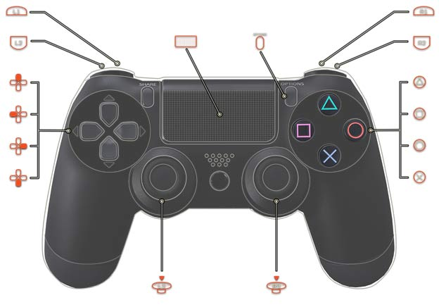
Control Design
Control design concerns the physical input and interactions with the
game state.
-
Controls can be direct or indirect
-
Direct controls allow the player to change the game state in the way
they desire
e.g. press space to shoot
-
Indirect controls allow the player to change the game state to affect
the system and cause changes
e.g. lower the price of an item to attract more customers and
increase sales
Feedback Design
Feedback design concerns the changes in the game in response to
control.
-
Feedback can be reinforcing or balancing
-
Reinforcing feedback encourages players into certain patterns of
play
-
Balancing feedback maintains the level of difficulty and challenge
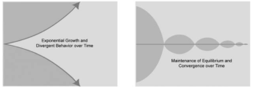
Level Design
Space
-
Linear: where tasks or rooms are visited sequentially
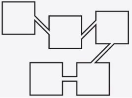
-
Parallel: where tasks are completed sequentially, with
different paths based on player decisions
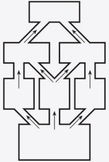
-
Network: where the player has the freedom to navigate between tasks
or rooms in any order or combination
-
Hub and Spoke: where players return to the hub environment after
completing tasks
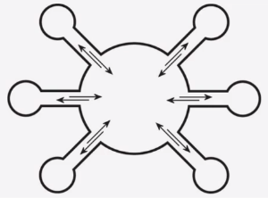
-
Ring: where the player repeats the same tasks many times
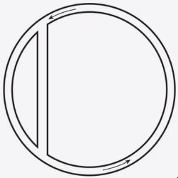
-
Open: where the player can explore the area freely
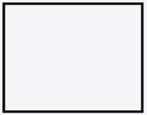
-
Combination: combination of level structures put together
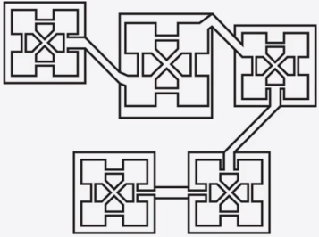
- aesthetics
- lighting
-
colour palette
- weather
- objects
-
visual effects
-
sound effects, ambient audio, music
-
content layers
Progression
-
Indicators show the player where they should go
- text
- colour
- lighting
-
negative space
-
landscapes, objects
-
Obstacles can block the player from choosing certain
paths
-
keys and doors
- walls
- puzzles
Mechanics
Mechanics describe the rules and algorithms behind the system
-
the initial conditions
-
the challenges they will face
-
the termination conditions
-
The game should provide feedback loops:
-
positive feedback / rewards
-
negative feedback / penalties
-
imagination, skill, intelligence, and determination
-
introduce features in order of general -> specialised
-
allow optional tutorials
-
allow the player to retry tutorials
-
highlight UI features
-
do not use blocks of text
-
ensure players understand the tutorials
-
turn off features until they are needed
-
Conceptual Non-Sequiturs: game elements which are not consistent with the game
mechanics
-
Poor Enemy AI: enemy AI should challenge the player, and have an
appropriate difficulty
-
Irrelevant Code: code should be reusable and fit together with other
classes or functions
-
replenish resources after consumption
-
release features and mechanics
-
allow levels with choice of difficulty
-
allow optional levels
-
allow alternate routes
-
provide optional tutorials
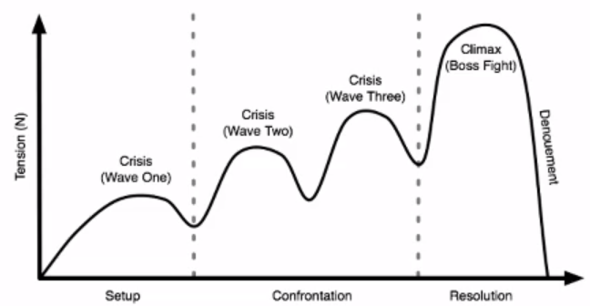
Balance and Difficulty
Fairness
Fairness: quality of treating people equally, or in a way that is
right and reasonable
-
in singleplayer - being right and reasonable
-
in multiplayer - treating players equally
-
a game must provide meaningful choices
-
players must perceive the game to be fair
-
chance should not outweigh player skill
-
players should be 'reset' at certain points
-
level of difficulty should be consistent
Balance
Balance: mathematical balance between players, game elements,
actions, and relations within the game mechanics
Balance differs depending on the context:
-
Singleplayer: whether the difficulty is appropriate for the
audience, such that users of all abilities can play
-
Multiplayer: whether all players have an equal chance of
winning
-
Strategy: whether all strategies have equal chances of
success
-
Objects: whether all objects have equal chances of producing
benefits/rewards
A dominant strategy is one which is much stronger than others, and is exploited to win the game. This causes players to avoid all other
strategies, making the game unbalanced and meaningless. To avoid
this, dominant features can be removed or changed, and counteractive strategies can be added. Developers should perform playtesting with a large sample size to identify dominant
strategies.
Relationships
Transitive Relationship: relation where elements can be compared to all other
elements
-
Assuming there exist three elements a, b, and c
-
If a > b and b > c
-
Then a > c
Transitive relationships between strategies mean that certain
strategies always have an advantage over others, making the game unbalanced. To fix this we can:
-
Impose direct cost - certain items or actions have higher costs
-
Impose shadow cost - certain items or actions have hidden costs or
consequences
Intransitive Relationship: relation where elements can be compared to sequentially
adjacent elements only
-
Assuming there exist three elements a, b, and c
-
If a > b and b > c
-
Then a ≯ c
Transitive
Intransitive
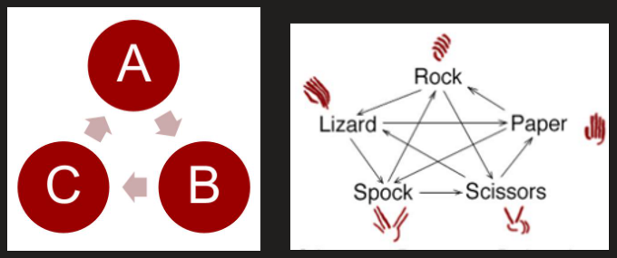
Feedback Loops
Feedback design concerns the changes in the game in response to
control.
-
gives advantages to winning players
e.g.items, tools, equipment, experience
-
gives advantages to losing players
e.g. random respawns, health
Positive
Negative
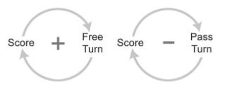
The snowball effect describes a situation where players gain feedback
proportional to their ability. This causes good players to get
better as positive feedback loops reward them, and bad players
to get worse as negative feedback loops penalise them. This
makes the game very predictable and unbalanced.
To
control the snowball effect:
-
adjust the reward given by positive feedback loops
-
associate costs to items and actions
-
allow players to work together against a common enemy
-
introduce chance-based events
-
'reset' players at certain points
Depth vs Complexity
Depth: variation of experiences available from the mechanics
Complexity: mental burden put on the player
-
data to remember
-
rules to process
-
calculations to make
-
actions on the interface
-
Complexity enables depth, but too much complexity limits depth
-
Aim for maximum depth and minimum complexity
-
combine or reuse existing mechanics
Flow
Flow: balance between skill and difficulty which produces
focus, control, and concentration
-
flow aims to create immersion in a game
-
flow increases the player's focus and concentration
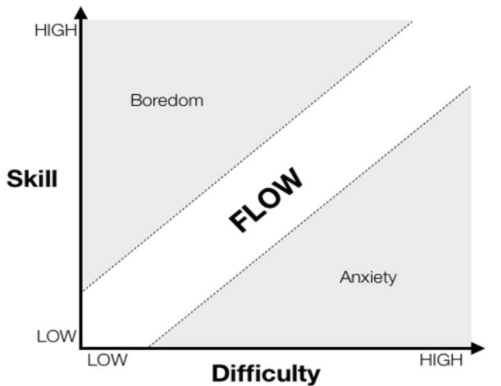
Difficulty
Absolute Difficulty: difficulty of a challenge compared to a trivial baseline
challenge
Relative Difficulty: absolute difficulty adjusted for power
Power: player's strength, stats, and abilities
Experience: practice the player has had on a particular challenge
Perceived Difficulty = relative difficulty - experience
= absolute difficulty - power - experience
Sawtooth levels ensure that difficulty rises for each level
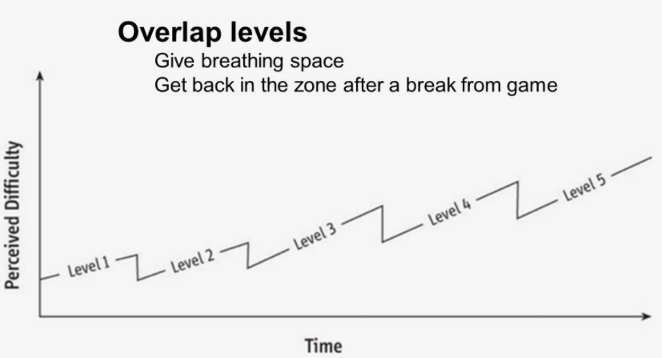
Interactive Narratives
Narrative: spoken or written account of connected events
Story: account of imaginary or real people and events told for
entertainment
-
The premise is a short story which establishes the action within
a setting or metaphor and leads to emotional
investment.
-
The Magic Circle is a special space or frame of mind where the normal
rules of the real world are suspended and replaced by the
artificial reality of the game world.
Narratology
Narratives are split into three main layers:
Narrative Text: method of telling the story, e.g. book, film, game
Story: organisation of fabula elements in chronological order
Fabula: series of events, people, locations, and more, which make up
the material of the narrative

Stories
-
Requires rich mechanics to produce a rich fabula
-
no pre-planned structure
-
Fabula and Story emerge from player actions
-
limits repetition and randomness
-
produces realistic events
-
the player is the storyteller
-
no guarantee of what the story will be
-
pre-planned structure
-
story is modelled as a sequence of locations
-
progress is maintained by limiting travel
-
pre-planned structure
-
story is modelled as a sequence of events
-
player cannot always influence the direction of the
story
The Story Engine is an interaction model showing the handling of inputs
and outputs which control the story.
-
takes player inputs as they progress through the
story
-
processes player events
-
produces outputs depending on player input and events
-
forms a cycle over time
-
The Emergent Story Engine processes events only through core mechanics
-
The Designed Story Engine processes events through core mechanics and the
storytelling engine, which is triggered by certain inputs
and produces narrative events
Emergent Story Engine
Designed Story Engine
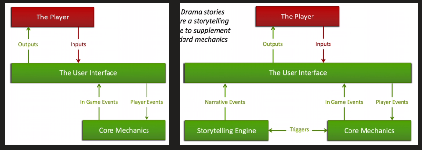
Agency and Patterns
Agency: the ability to act or exert power
Mark Bernstein's Non-Linear Patterns is an analysis of structural patterns used by authors.
|
Cycle
|
Reader returns to a previously visited node and
joins a new path
|
|
Joyce's Cycle
|
Reader returns to a previously visited node and
continues along a visited path
|
|
Contour
|
Combination of cycles allowing free movement
between each path
|
|
Counterpoint
|
Alternating voices or themes
|
|
Tangle
|
Variety of paths where the correct choice is
not provided
|
|
Sieve
|
Layer of paths which direct the reader to
certain sections or episodes
|
|
Mirrorworld
|
Stories are duplicated and changed to produce
contrast
|
|
Montage
|
Collection of narratives which reinforce each
other
|
|
Split/Join
|
Reader chooses from two or more paths, then
returns to the original
|
|
Rashomon
|
Reader traverses a split/join embedded within a
cycle
|
![In the Cycle, the reader returns to a
previously-visited node and
eventually departs along a new path.
In Joyce's Cycle, the reader rejoins a
previously-visited part of the
hypertext and continues along a
previously-traversed trajectory
A contour is formed where cycles
impinge on each other, allowing free
movement within and between the
paths defined by each cycle.
Mirrorworlds provide a parallel or
intertextual narrative that adopts a
different voice or contrasting
perspective.
In Counterpoint, two voices alternate,
interleaving themes or welding
together theme and response.
The Tangle confronts the reader with a
variety of links without providing
sufficient clues to guide the reader's
choice.
Sieves sort readers through one or
more layers of choice in order to direct
them to sections or episodes. Sieves
are often trees, but may be different
topologies
In Montage, several distinct writing
spaces appear simultaneously,
reinforcing each other while retaining
their separate identities.](assets/game-design-and-development/image13.png)
![The Split/Join pattern knits two or more sequences
together. Split/J0in is indispensable to interactive narratives
in which the reader's intervention changes the course Of
events... Splits permit the narrative to depend on the
reader's choice for a limited span, later returning the reader
(at least temporarily) to a central core.
The Rashomon pattern embeds a split-join within a cycle.
The split/join effectively breaks the cycle, as readers explore
different splits during each recurrent exploration, yet the
cycle remains a prominent frame that provides context for
each strand.
Overviews and tours are examples Of Split/J0in where the
rhetorical intent of each path is similar, but one side of the
split is more detailed than the other.](assets/game-design-and-development/image14.png)
Choices
Choice: manifestation of agency
-
Influences the narrative in several ways
-
Intermediate - the player's choice is made at the point of
branching
-
Deferred - the player's choice is recorded and used later
in the story
-
Cumulative - the player's choices are fed into a model which
influences a branch later in the story
-
Allows players to overcome internal conflict
-
finding extra lives
-
finding achievements
-
doing side quests
-
pursuing challenges
-
e.g. choosing between attack, defense, or stamina
-
Moral and ethical judgements
-
moral: internal values
-
ethical: external values and rules
Narrative Paradox: conflict between the player's freedom of choice and
the author's control over the world
-
This is managed in several ways
-
create an illusion of choice
-
use cutscenes to remove agency
-
use the physical space to encourage or restrict
choices
-
use cycles to return the story to the same state after each
episode
-
use splits/joins to restrict the exponential growth of
branches
-
use mirrorworlds to create alternate paths with the same
assets
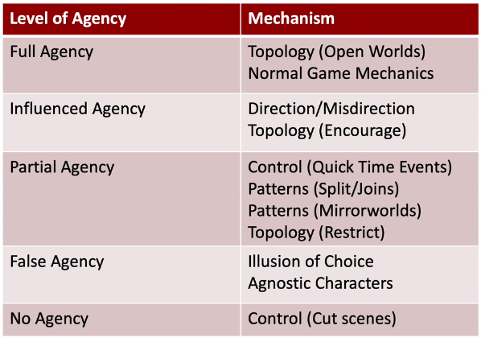
Writing Narratives
Story Arc: planned trajectory of a story, including the start,
structure of events, and end
Modelling Story Arcs
The Three Act Arc divides a story into 3 acts.
-
A problem changes or affects the hero in a significant way.
For example, Princess Peach is taken by Bowser.
-
Acquisition of Means and Dramatic Reversal
-
The character acquires the skills, allies, and equipment
needed to solve the problem. A dramatic reversal occurs
which hinders the plan. This act contains many conflicts and
resolutions as drama slowly builds.
-
The drama reaches its peak as the hero uses their skills to
solve the problem irreversibly. For example, Link fights
Ganon.
The Hero's Journey is a story template where a hero goes on an adventure, is
victorious in a crisis, and returns home with new skills. This
is based on Campbell's 17 stages.
1-3. The Beginning
-
An ordinary life is disturbed as the hero is sent away,
given a goal, or understands something that changes their
situation.
-
The hero rejects the call, only to find this impossible or
dangerous.
-
The hero obtains help, support, or equipment needed to
progress.
4-11. The Journey
-
The hero leaves the ordinary world and enters the
adventure. This is often where the tutorial ends and the
main game begins.
-
The hero is forced to accept the path and reflects on their
situation, themselves, and the path ahead.
-
The hero is tested and must overcome a series of
challenges.
-
The hero comes to understand love (romantic or platonic)
and grows beyond conflict and the trials.
-
The hero overcomes a temptation to leave the journey.
-
Atonement with the Father
-
Reconciliation with a supreme being. The hero turns to
other options as their main plan fails.
-
The point of realization from which a greater understanding
is achieved.
-
The hero is reborn or gains a supernatural power, and the
quest is completed.
12-17. The Return
-
The hero finds himself not wanting to leave.
-
The hero escapes the boon to return to the regular
world.
-
The hero receives help to return to ordinary life.
-
Crossing the Return Threshold
-
The hero returns to the other world.
-
The hero becomes a master of both worlds, and achieves
spiritual balance.
-
Mastery leads to freedom from fear, and the hero is free to
live without regret.
Pacing
Pacing is controlled in a number of narrative and mechanical
methods.
-
emotional scenes
-
stirring music
-
dramatic action
-
rapid decision making
-
scarce resources
-
increased conflict
The classic dramatic arc follows a premise leading to rising action, a climax, and a resolution.
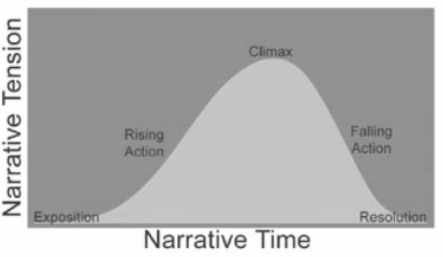
Dramatic curves can also be more complex with several peaks within the story.
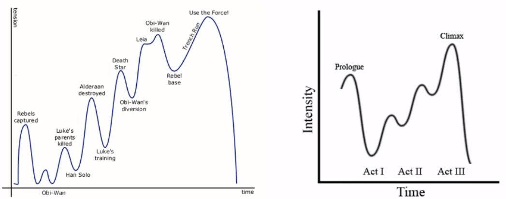
Portnow states that pacing is recursive and repeats itself infinitely within games.
-
Arc - the overall story (Mario goes on an adventure to
rescue the princess)
-
Scenes - individual encounters (mario defeats enemies to
reach the flag)
-
Actions - interactions with the player (mario jumps over a
gap)
Pacing Techniques
-
Means "in the middle of" and jumps the player
straight into the action.
-
Where parts of the story are omitted or shown out of
order.
Prolepsis: flashforward or foreshadowing
Analepsis: flashbacks
-
Cutscenes, Cinematics, and In-Game Events
-
Cutscene: control is removed from the player to convey a key
part of the story
Cinematic: pre-rendered or live-action video
In-Game Event: inverted cutscene where the environment changes but
not the player
Characters
Characters come in 3 main forms:
-
The hero, often the player's avatar
-
The villain, a central NPC who acts as an obstacle
-
Mixture of allies, guides, neutrals, and enemies
The Myers-Briggs Type Indicator is useful for constructing personalities.
-
Introversion vs Extroversion
-
Strength from being alone or in crowds
-
Trusting facts or gut feeling
Thinking vs Feeling
-
Making decisions logically or empathetically
-
Liking resolution or open options
Characters tend to follow common archetypes:
-
Protagonists
-
The Classical Hero
-
possesses a supernatural power, skill, or ability which rises
them above regular people
-
fails to bend the world to their desires, or has a hidden
weakness
-
power fantasies are common in games
-
personal suffering makes the character feel human and
relatable
-
rebellion against the classical hero with stronger flaws
and mixed motivations
-
has villainous traits like anger or aggression
-
brooding, antsy, rebellious, self-destructive
-
unconstrained by ethics or laws
-
ordinary person with no remarkable advantages or
flaws
-
initially is disempowered but grows to match a
challenge
-
very relatable for the player
-
an evil character designed to make the player dislike
them
-
opposes the protagonists views or values
-
appears big and powerful and is satisfying to defeat
-
source of drama and conflict in the story
-
evil stems from a motivation such as greed or revenge
-
tightly linked to the protagonist
-
drives the story as a primal concept
-
often a monster, alien, or inhuman being
-
is not relatable and has no flaws
-
explores deep questions relating to their ideology
-
can be a social commentary on society or institution
-
tightly linked to the protagonist and the world
Poetics of Game Narratives
Narratology: study of narratives and their structure, function, and
themes
Ludology: study of games, gameplay, and players
|
Narratology
|
Ludology
|
|
Fixed sequence of events
|
Flexible arrangement of events
|
|
Variable speed
|
Fixed speed
|
|
Story & Fabula
|
Mechanics & Assets
|
|
Requires actors
|
Can be abstract
|
|
Narrative desire
|
Desire for understanding and performance
|
|
Consume once
|
Play many times
|
Immersion
Immersion is determined by 3 factors:
-
Sensory - physical feeling of being in the game world
-
Challenge - cognitive involvement in a game
-
Imagination - interest in the game characters and world
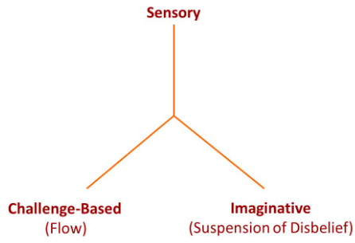
Poetics
Poetics is generally defined as the study of linguistic techniques in poetry and literature. In games, poetics is about how a game functions and comes together to produce an effect on
the player.
Poetics can be supported using two
approaches:
-
Reject the Grand Narrative Arc
-
Setup: introduction of the premise, characters, and
world
-
Complication: introduces a challenge to the protagonist
-
Development: the protagonist working towards a goal
-
Resolution: the protagonist achieves victory
-
Denouement: the story is concluded
-
Storyworld: the environment in which the game unfolds
-
Characters: beings populating the world
-
Emotion: feelings of characters and players
-
Interface: way in which narrative is directed by the
player
-
Micro-Narratives: smaller parts of the story
-
Diegetic: narrative told using standard mechanics existing in
the world
-
Extra-Diegetic: narrative told separately from the world using
designed mechanics
- Art
-
Audio
-
Music
-
Writing
-
Mechanics